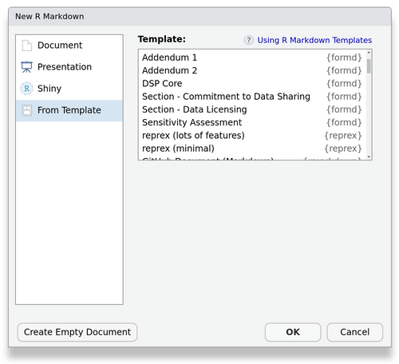

FoRmd: Form templates with Rmarkdown
This package intends to provide:
- A reusable collection of form components, currently focused on collecting project intake and governance info.
- Utils for creating web forms so that functional forms can be customized from templates or from scratch.
- A place for Sage projects to share other reusable documents.
Development Notes
- New governance forms (DUO+ initiatve) are in development.
- This is being incubated in the NF-OSI project. At some point, when stable and useful enough, we plan to have this be under Sage-Bionetworks.
Alternatives
You should be aware of alternatives and consider your use case.
For Data Sharing Plans, consider DMPTool.org.
For more general (and also more expensive) solutions: DocuSign and Jotform.
This currently provides several free and open-source well-thought-out yet still-customizable forms for specific use cases (starting with DSPs). It isn’t meant for PHI collection.
Usage
Templates
(Requires rmarkdown >= 2.14)
To see available templates:rmarkdown::available_templates(package = "formd")
To import all templates for a “standard” DSP document:
formd::draftStandardDSP(version = "v1")
(here, an older version is specified, but if not specified this will default to the most current version)
This creates a folder ‘DSP_Standard_v1’ in the current working directory, which contains a bundle of docs for a DSP. Drafting a DSP in this manner is like ordering a prix fixe menu. You can then change the parameters in the main document, i.e. DSP_Standard_v*.Rmd.
Generally, to customize a template to fit the needs of your project:
- Change parameters such as
fundingAgencyto reference the actual project funding agency in the main document. - Tweak the wording if needed in the child template docs.
- Remove or add form inputs in the child template; a
*_config.ymlfile defines inputs if there are inputs for that template.
Forms are modularized so that they can be hosted on separate web pages or concatenated into a single web page. Again, the above describes how to make a DSP form the prix fixe way, but you may alternatively wish to build your DSP form a la carte. For example, you may want to import only one component template, the DSP_Core, write totally different custom sections, and then compose your own final DSP_Main document. In that case, just import using rmarkdown::draft("DSP_Core", template = "DSP_Core", package = "formd") into your draft working directory (or use the RStudio UI as below).
RStudio
If using RStudio, templates can be accessed via New File > Rmarkdown…

For more about templates (if you’ve never used them), see RStudio - Rmarkdown Templates.
Form Input Builder Utils
To customize the form inputs for an existing template or a from-scratch document, you should understand how the *config.yml documents work. The “DSP Core” template is the best example of what inputs are available and how to compose them (see dsp_core_config.yml).
Questions
- Which form backend should I use/does this work with? We use formspark.io. There are a multitude of good form backends, though you may need to preprocess your JSON data to make PDF generation work correctly.
- Can this be used with PHI? That actually depends on your form backend and where you are putting your form. But this was really originally intended for better low-throughput administrative data collection, so it is not really recommended.
- You said this could be ‘A place for Sage projects to share other reusable form documents’? What can I contribute? Possibly any generalizable community surveys or data reports.